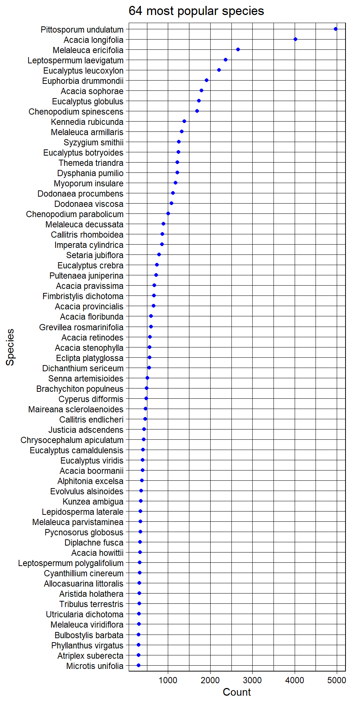

Chapter 3 Data transformation
The data has some information about taxonRank which is higher than species. That is because the species data is missing.
## family genus taxonRank decimalLatitude decimalLongitude
## 17 Rubiaceae Psychotria GENUS -16.47347 145.3261
## 31 Dicranaceae Leucobryum GENUS -15.89014 145.2428
## 57 Caulacanthaceae Catenella GENUS -26.80674 153.1427
## 80 Ericaceae Styphelia GENUS -10.15684 142.1761
## 82 Malvaceae Seringia GENUS -19.00679 146.0928
## 95 Campanulaceae Isotoma GENUS -12.04167 142.5583
## 96 Dilleniaceae Hibbertia GENUS -28.84008 151.9761
## 104 Lamiaceae Prostanthera GENUS -25.30978 151.4366
## 129 Ericaceae Leucopogon GENUS -28.24778 153.1381
## 148 Poaceae Eriachne GENUS -20.69278 145.2361We do not know this kind of information belongs to which specific species. And we know that the living area of different species in the same genus could be much different. For example, two data with same genus without species information has much different latitude and longitude.
## family genus taxonRank decimalLatitude decimalLongitude
## 315074 Atherospermataceae Daphnandra GENUS -17.37 145.72
## 348821 Atherospermataceae Daphnandra GENUS -31.45 151.17Therefore, we should use the information of taxonRank which is species or lower rank and drop the higher rank. Since all species have speciesKey, we can easily drop data with no speciesKey.
Check columns and choose informative ones.
## [1] "species" "stateProvince"
## [3] "individualCount" "decimalLatitude"
## [5] "decimalLongitude" "coordinateUncertaintyInMeters"
## [7] "coordinatePrecision" "elevation"
## [9] "elevationAccuracy" "depth"
## [11] "depthAccuracy" "month"
## [13] "year" "speciesKey"We also notice that some species only appear several times. We choose to drop species appearing less than 300 records which represent that they are popular in the research.
## # A tibble: 10 x 2
## # Groups: species [10]
## species count
## <chr> <int>
## 1 Xylocarpus rumphii 1
## 2 Xylosma parvifolium 1
## 3 Yamazakia pusilla 1
## 4 Zantedeschia aethiopica 1
## 5 Ziziphus jujuba 1
## 6 Zornia disticha 1
## 7 Zornia latifolia 1
## 8 Zostera mucronata 1
## 9 Zygnema cruciatum 1
## 10 Zygnema peliosporum 1Finally, we get 64 species to investigate. Most of them are in Magnoliopsida class.
## [1] "Pittosporum undulatum" "Acacia longifolia"
## [3] "Melaleuca ericifolia" "Leptospermum laevigatum"
## [5] "Eucalyptus leucoxylon" "Euphorbia drummondii"
## [7] "Acacia sophorae" "Eucalyptus globulus"
## [9] "Chenopodium spinescens" "Kennedia rubicunda"
## [11] "Melaleuca armillaris" "Syzygium smithii"
## [13] "Eucalyptus botryoides" "Themeda triandra"
## [15] "Dysphania pumilio" "Myoporum insulare"
## [17] "Dodonaea procumbens" "Dodonaea viscosa"
## [19] "Chenopodium parabolicum" "Melaleuca decussata"
## [21] "Callitris rhomboidea" "Imperata cylindrica"
## [23] "Setaria jubiflora" "Eucalyptus crebra"
## [25] "Pultenaea juniperina" "Acacia pravissima"
## [27] "Fimbristylis dichotoma" "Acacia provincialis"
## [29] "Acacia floribunda" "Grevillea rosmarinifolia"
## [31] "Acacia retinodes" "Acacia stenophylla"
## [33] "Eclipta platyglossa" "Dichanthium sericeum"
## [35] "Senna artemisioides" "Brachychiton populneus"
## [37] "Cyperus difformis" "Maireana sclerolaenoides"
## [39] "Callitris endlicheri" "Justicia adscendens"
## [41] "Chrysocephalum apiculatum" "Eucalyptus camaldulensis"
## [43] "Eucalyptus viridis" "Acacia boormanii"
## [45] "Alphitonia excelsa" "Evolvulus alsinoides"
## [47] "Kunzea ambigua" "Lepidosperma laterale"
## [49] "Melaleuca parvistaminea" "Pycnosorus globosus"
## [51] "Acacia howittii" "Diplachne fusca"
## [53] "Leptospermum polygalifolium" "Cyanthillium cinereum"
## [55] "Allocasuarina littoralis" "Aristida holathera"
## [57] "Tribulus terrestris" "Melaleuca viridiflora"
## [59] "Utricularia dichotoma" "Bulbostylis barbata"
## [61] "Phyllanthus virgatus" "Atriplex suberecta"
## [63] "Microtis unifolia"